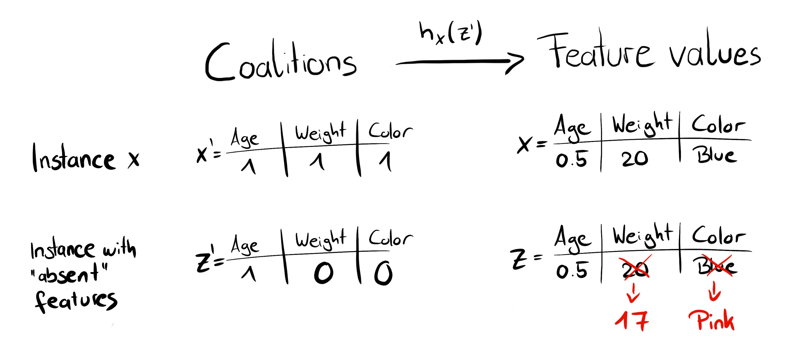
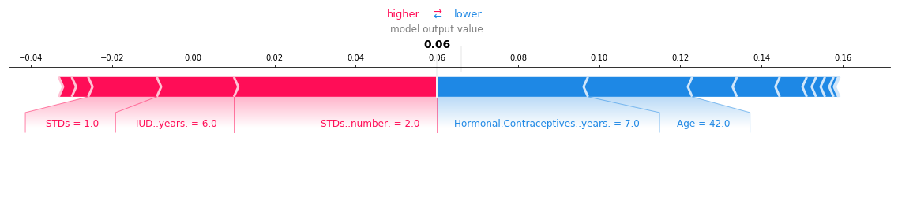
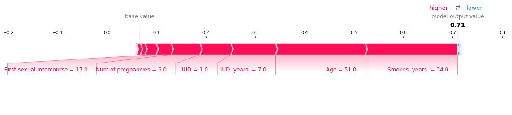
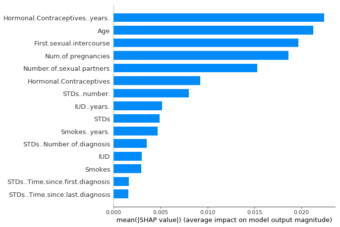
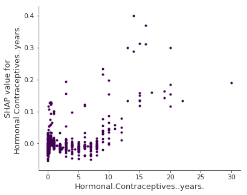
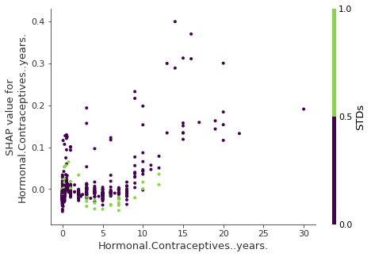

En cours de traduction.
9.6 - SHAP (SHapley Additive exPlanations)
SHAP (SHapley Additive exPlanations) de Lundberg et Lee (2017)1 est une méthode pour expliquer les prédictions individuelles. SHAP est basé sur les valeurs de Shapley théoriquement optimales du jeu.
Vous recherchez un livre pratique et approfondi sur les valeurs SHAP et Shapley ? J’en ai trouvé un pour vous.
Il y a deux raisons pour lesquelles SHAP a son propre chapitre et n’est pas un sous-chapitre des valeurs de Shapley. Premièrement, les auteurs de SHAP ont proposé KernelSHAP, une approche alternative d’estimation basée sur le noyau pour les valeurs de Shapley inspirée des modèles de substitution locaux. Et ils ont proposé TreeSHAP, une approche d’estimation efficace pour les modèles arborescents. Deuxièmement, SHAP est livré avec de nombreuses méthodes d’interprétation globale basées sur des agrégations de valeurs de Shapley. Ce chapitre explique à la fois les nouvelles approches d’estimation et les méthodes d’interprétation globale.
Je recommande de lire d’abord les chapitres sur les valeurs de Shapley et les modèles locaux (LIME).
9.6.1 - Définition
Le but de SHAP est d’expliquer la prédiction d’une instance x en calculant la contribution de chaque fonctionnalité à la prédiction. La méthode d’explication SHAP calcule les valeurs de Shapley à partir de la théorie des jeux coalitionnels. Les valeurs caractéristiques d’une instance de données agissent en tant qu’acteurs dans une coalition. Les valeurs de Shapley nous indiquent comment répartir équitablement le « paiement » (= la prédiction) entre les fonctionnalités. Un joueur peut être une valeur de caractéristique individuelle, par exemple pour des données tabulaires. Un joueur peut également être un groupe de valeurs de fonctionnalités. Par exemple, pour expliquer une image, les pixels peuvent être regroupés en superpixels et la prédiction répartie entre eux. Une innovation apportée par SHAP est que l’explication de la valeur de Shapley est représentée comme une méthode d’attribution de caractéristiques additive, un modèle linéaire. Cette vue relie les valeurs LIME et Shapley. SHAP spécifie l’explication comme suit :
\[g(z')=\phi_0+\sum_{j=1}^M\phi_jz_j'\]
où g est le modèle d’explication, \(z' \in \{0,1\}^M\) est le vecteur de coalition, M est la taille maximale de la coalition et \(\phi_j\in\mathbb{R}\) est l’attribution de caractéristiques pour une caractéristique j, les valeurs de Shapley. Ce que j’appelle « vecteur de coalition » est appelé « fonctionnalités simplifiées » dans l’article SHAP. Je pense que ce nom a été choisi car, par exemple, pour les données d’image, les images ne sont pas représentées au niveau des pixels, mais agrégées en superpixels. Je pense qu’il est utile de considérer les z comme décrivant les coalitions : dans le vecteur de coalition, une entrée de 1 signifie que la valeur de la caractéristique correspondante est « présente » et 0 qu’elle est « absente ». Cela devrait vous sembler familier si vous connaissez les valeurs de Shapley. Pour calculer les valeurs de Shapley, nous simulons que seules certaines valeurs de caractéristiques sont jouées (« présentes ») et d’autres ne le sont pas (« absentes »). La représentation sous forme de modèle linéaire des coalitions est une astuce pour le calcul des \(\phi\). Pour x, l’instance d’intérêt, le vecteur de coalition x’ est un vecteur composé uniquement de 1, c’est-à-dire que toutes les valeurs de caractéristiques sont « présentes ». La formule se simplifie en :
\[g(x')=\phi_0+\sum_{j=1}^M\phi_j\]
Vous pouvez trouver cette formule dans une notation similaire dans le chapitre sur les valeurs de Shapley. Nous en saurons davantage sur l’estimation réelle plus tard. Parlons d’abord des propriétés du \(\phi\). C’est avant d’entrer dans les détails de leur estimation.
Les valeurs de Shapley sont la seule solution qui satisfait aux propriétés d’efficacité, de symétrie, de factice et d’additivité. SHAP les satisfait également, puisqu’il calcule les valeurs de Shapley. Dans l’article SHAP, vous trouverez des écarts entre les propriétés SHAP et les propriétés Shapley. SHAP décrit les trois propriétés souhaitables suivantes :
1) Précision locale
\[\hat{f}(x)=g(x')=\phi_0+\sum_{j=1}^M\phi_jx_j'\]
Si vous définissez \(\phi_0=E_X(\hat{f}(x))\) et réglez tout \(x_j^\prime\) to \(1\), c’est la propriété d’efficacité de Shapley. Uniquement avec un nom différent et en utilisant le vecteur coalition.
\[\hat{f}(x)=\phi_0+\sum_{j=1}^M\phi_jx_j'=E_X(\hat{f}(X))+\sum_{j=1}^M\phi_j\]
2) Manque
\[x_j^\prime = 0 \Rightarrow \phi_j = 0\]
Le caractère manquant indique qu’une fonctionnalité manquante obtient une attribution de zéro. Noter que \(x_j^\prime\) fait référence aux coalitions où une valeur de \(0\) représente l’absence de valeur de caractéristique. En notation de coalition, toutes les valeurs de caractéristiques \(x_j^\prime\) de l’instance à expliquer doit être « \(1\) ». La présence d’un 0 signifierait que la valeur de la fonctionnalité est manquante pour l’instance qui vous intéresse. Cette propriété ne fait pas partie des propriétés des valeurs Shapley « normales ». Alors pourquoi en avons-nous besoin pour SHAP ? Lundberg le qualifie de « propriété comptable mineure ». Une caractéristique manquante pourrait – en théorie – avoir une valeur de Shapley arbitraire sans nuire à la propriété de précision locale, puisqu’elle est multipliée par \(x_j^\prime = 0\). La propriété Missingness impose que les fonctionnalités manquantes obtiennent une valeur Shapley de \(0\). En pratique, cela n’est pertinent que pour les fonctionnalités constantes.
3) Cohérence
Laisser \(\hat{f}_x(z^\prime) = \hat{f}(h_x(z^\prime))\) et \(z_{-j}^\prime\) indique que \(z_j^\prime = 0\). Pour deux modèles \(f\) et \(f^\prime\) qui satisfont :
\[\hat{f}_x^\prime(z^\prime)-\hat{f}_x^\prime(z_{-j}')\geq{}\hat{f}_x(z')-\hat{f}_x(z_{-j}^\prime)\]
pour toutes les entrées \(z^\prime \in \{0, 1\}^M\), alors :
\[\phi_j(\hat{f}^\prime, x) \geq \phi_j(\hat{f}, x)\]
La propriété de cohérence indique que si un modèle change de telle sorte que la contribution marginale d’une valeur de caractéristique augmente ou reste la même (indépendamment des autres caractéristiques), la valeur de Shapley augmente également ou reste la même. De la cohérence découlent les propriétés de Shapley, linéarité, factice et symétrie, comme décrit dans l’annexe de Lundberg et Lee.
9.6.2 KernelSHAP
KernelSHAP estime pour une instance \(x\) les contributions de chaque valeur de fonctionnalité à la prédiction. KernelSHAP se compose de cinq étapes :
- Exemples de coalitions \(z_k'\in\{0,1\}^M,\quad{}k\in\{1,\ldots,K\}\) (1 = fonctionnalité présente dans la coalition, 0 = fonctionnalité absente).
- Obtenez une prédiction pour chaque \(z_k'\) en convertissant d’abord \(z_k'\) à l’espace de fonctionnalités d’origine, puis en appliquant le modèle \(\hat{f}: \hat{f}(h_x(z_k'))\).
- Calculer le poids de chaque \(z_k'\) avec le noyau SHAP.
- Ajuster le modèle linéaire pondéré.
- Renvoie les valeurs Shapley \(\phi_k\), les coefficients du modèle linéaire.
Nous pouvons créer une coalition aléatoire en lançant des pièces de monnaie à plusieurs reprises jusqu’à ce que nous obtenions une chaîne de 0 et de 1. Par exemple, le vecteur \((1, 0, 1, 0)\) signifie que nous avons une coalition des première et troisième caractéristiques. Les \(K\) coalitions échantillonnées deviennent l’ensemble de données pour le modèle de régression. La cible du modèle de régression est la prédiction d’une coalition. (« Attendez ! », dites-vous. « Le modèle n’a pas été formé sur ces données de coalition binaires et ne peut pas faire de prédictions à leur sujet. ») Pour passer des coalitions de valeurs de caractéristiques à des instances de données valides, nous avons besoin d’une fonction \(h_x(z')=z\) où \(h_x:\{0,1\}^M\rightarrow\mathbb{R}^p\). La fonction \(h_x\) met en relation les \(1\) à la valeur correspondante de l’instance x que nous voulons expliquer. Pour les données tabulaires, elle met en relation les \(0\) aux valeurs d’une autre instance que nous échantillonnons à partir des données. Cela signifie que nous assimilons « la valeur de caractéristique est absente » à « la valeur de caractéristique est remplacée par une valeur de caractéristique aléatoire à partir des données ». Pour les données tabulaires, la figure suivante visualise le mappage des coalitions aux valeurs de caractéristiques :

\(h_x\) pour la fonctionnalité de traitement des données tabulaires \(X_j\) et \(X_{-j}\) (les autres caractéristiques) comme indépendantes et s’intègre sur la distribution marginale :
\[\hat{f}(h_x(z')) = E_{X_{-j}}[\hat{f}(x)]\]
Échantillonner à partir de la distribution marginale signifie ignorer la structure de dépendance entre les caractéristiques présentes et absentes. KernelSHAP souffre donc du même problème que toutes les méthodes d’interprétation basées sur les permutations. L’estimation accorde trop de poids aux cas improbables. Les résultats peuvent devenir peu fiables. Mais il est nécessaire de procéder à un échantillonnage à partir de la distribution marginale. La solution serait d’échantillonner à partir de la distribution conditionnelle, ce qui modifie la fonction valeur, et donc le jeu pour lequel les valeurs de Shapley sont la solution. Par conséquent, les valeurs Shapley ont une interprétation différente : par exemple, une fonctionnalité qui n’a peut-être pas été utilisée du tout par le modèle peut avoir une valeur Shapley non nulle lorsque l’échantillonnage conditionnel est utilisé. Pour le jeu marginal, cette valeur de fonctionnalité obtiendrait toujours une valeur Shapley de 0, car sinon elle violerait l’axiome factice.
Pour les images, la figure suivante décrit une fonction de mappage possible :

La grande différence avec LIME réside dans la pondération des instances dans le modèle de régression. LIME pondère les instances en fonction de leur proximité avec l’instance d’origine. Plus il y a de \(0\) dans le vecteur coalition, plus le poids dans LIME est petit. SHAP pondère les instances échantillonnées en fonction du poids que la coalition obtiendrait dans l’estimation de la valeur de Shapley. Les petites coalitions (quelques 1) et les grandes coalitions (c’est-à-dire plusieurs 1) obtiennent les pondérations les plus élevées. L’intuition derrière cela est la suivante : nous en apprenons davantage sur les caractéristiques individuelles si nous pouvons étudier leurs effets de manière isolée. Si une coalition est constituée d’une seule caractéristique, nous pouvons en apprendre davantage sur l’effet principal isolé de cette caractéristique sur la prédiction. Si une coalition comprend toutes les fonctionnalités sauf une, nous pouvons en apprendre davantage sur l’effet total de cette fonctionnalité (effet principal plus interactions entre fonctionnalités). Si une coalition est composée de la moitié des fonctionnalités, nous en apprenons peu sur la contribution d’une fonctionnalité individuelle, car il existe de nombreuses coalitions possibles avec la moitié des fonctionnalités. Pour obtenir une pondération conforme à Shapley, Lundberg et al. propose le noyau SHAP :
\[\pi_{x}(z') = \frac{(M-1)}{\binom{M}{|z'|}|z'|(M-|z'|)}\]
Ici, M est la taille maximale de la coalition et \(|z^\prime|\) le nombre de fonctionnalités présentes dans l’instance z’. Lundberg et Lee montrent que la régression linéaire avec ce poids de noyau donne des valeurs de Shapley. Si vous utilisiez le noyau SHAP avec LIME sur les données de la coalition, LIME estimerait également les valeurs de Shapley !
Nous pouvons être un peu plus intelligents dans l’échantillonnage des coalitions : les coalitions les plus petites et les plus grandes pèsent le plus lourd. Nous obtenons de meilleures estimations de la valeur de Shapley en utilisant une partie du budget d’échantillonnage \(K\) pour inclure ces coalitions de poids élevé au lieu d’échantillonner aveuglément. Nous commençons par toutes les coalitions possibles avec les caractéristiques \(1\) et \(M-1\), ce qui fait \(2 \times M\) coalitions au total. Lorsque nous disposons de suffisamment de budget (le budget actuel est de \(K\) à \(2M\)), nous pouvons inclure des coalitions avec 2 fonctionnalités et avec des fonctionnalités \(M-2\), etc. À partir des tailles de coalition restantes, nous échantillonnons avec des pondérations réajustées.
Nous avons les données, la cible et les poids; Tout ce dont nous avons besoin pour construire notre modèle de régression linéaire pondérée :
\[g(z')=\phi_0+\sum_{j=1}^M\phi_jz_j'\]
Nous entraînons le modèle linéaire \(g\) en optimisant la fonction de perte \(L\) suivante :
\[L(\hat{f},g,\pi_{x}) = \sum_{z'\in{}Z}[\hat{f}(h_x(z'))-g(z')]^2\pi_{x}(z')\]
où \(Z\) représente les données d’entraînement. C’est la bonne vieille somme ennuyeuse des carrés des erreurs que nous optimisons habituellement pour les modèles linéaires. Les coefficients estimés du modèle, les \(\phi_j\), sont les valeurs de Shapley.
Puisque nous sommes dans un contexte de régression linéaire, nous pouvons également utiliser les outils standards de régression. Par exemple, nous pouvons ajouter des termes de régularisation pour rendre le modèle clairsemé. Si nous ajoutons une pénalité \(L1\) à la perte \(L\), nous pouvons créer des explications clairsemées. (Je ne suis pas sûr que les coefficients résultants soient toujours des valeurs Shapley valides.)
9.6.3 - ArbreSHAP
Lundberg et coll. (2018)2 ont proposé TreeSHAP, une variante de SHAP pour les modèles d’apprentissage automatique basés sur des arbres tels que les arbres de décision, les forêts aléatoires et les arbres améliorés par gradient. TreeSHAP a été présenté comme une alternative rapide et spécifique au modèle à KernelSHAP, mais il s’est avéré qu’il peut produire des attributions de fonctionnalités peu intuitives.
TreeSHAP définit la fonction de valeur en utilisant l’attente conditionnelle \(E_{X_j|X_{-j}}(\hat{f}(x)|x_j)\) au lieu de l’attente marginale. Le problème avec l’espérance conditionnelle est que les caractéristiques qui n’ont aucune influence sur la fonction de prédiction \(f\) peuvent obtenir une estimation TreeSHAP différente de zéro, comme le montrent Sundararajan et al. (2019)3 et Janzing et al. (2019)4. L’estimation non nulle peut se produire lorsque la caractéristique est corrélée à une autre caractéristique qui a réellement une influence sur la prédiction.
À quel point TreeSHAP est-il plus rapide ? Comparé à KernelSHAP exact, il réduit la complexité de calcul de \(E_{X_j|X_{-j}}(\hat{f}(x)|x_j)\), où \(T\) est le nombre d’arbres, \(L\) est le nombre maximum de feuilles dans n’importe quel arbre et \(D\) la profondeur maximale de n’importe quel arbre.
TreeSHAP utilise l’attente conditionnelle \(E_{X_j|X_{-j}}(\hat{f}(x)|x_j)\) pour estimer les effets. Je vais vous donner une intuition sur la façon dont nous pouvons calculer la prédiction attendue pour un seul arbre, une instance \(x\) et un sous-ensemble de fonctionnalités \(S\). Si nous conditionnons toutes les fonctionnalités – si \(S\) était l’ensemble de toutes les fonctionnalités – alors la prédiction du nœud dans à laquelle tombe l’instance \(x\) serait la prédiction attendue. Si nous ne conditionnions la prédiction sur aucune caractéristique – si \(S\) était vide – nous utiliserions la moyenne pondérée des prédictions de tous les noeuds terminaux. Si \(S\) contient certaines fonctionnalités, mais pas toutes, nous ignorons les prédictions de nœuds inaccessibles. Inaccessible signifie que le chemin de décision qui mène à ce nœud contredit les valeurs de \(x_S\). À partir des noeds terminaux restants, nous faisons la moyenne des prédictions pondérées par la taille des noeuds (c’est-à-dire le nombre d’échantillons d’apprentissage dans ce noeud). La moyenne des noeuds terminaux restants, pondérée par le nombre d’instances par noeud, est la prédiction attendue pour \(x\) étant donné \(S\). Le problème est que nous devons appliquer cette procédure pour chaque sous-ensemble \(S\) possible des valeurs des caractéristiques. TreeSHAP calcule en temps polynomial au lieu d’exponentiel. L’idée de base est de pousser tous les sous-ensembles \(S\) possibles vers le bas de l’arborescence en même temps. Pour chaque nœud de décision, nous devons suivre le nombre de sous-ensembles. Cela dépend des sous-ensembles du nœud parent et de la fonctionnalité fractionnée. Par exemple, lorsque la première division d’un arbre concerne la fonctionnalité \(x3\), alors tous les sous-ensembles contenant la fonctionnalité \(x3\) iront vers un noeud (celui où va \(x\)). Les sous-ensembles qui ne contiennent pas la fonctionnalité \(x3\) vont aux deux noeuds avec un poids réduit. Malheureusement, des sous-ensembles de tailles différentes ont des poids différents. L’algorithme doit garder une trace du poids global des sous-ensembles dans chaque noeud. Cela complique l’algorithme. Je me réfère à l’article original pour plus de détails sur TreeSHAP. Le calcul peut être étendu à davantage d’arbres : grâce à la propriété d’additivité des valeurs de Shapley, les valeurs de Shapley d’un ensemble d’arbres sont la moyenne (pondérée) des valeurs de Shapley des arbres individuels.
Ensuite, nous examinerons les explications SHAP en action.
9.6.4 - Exemples
J’ai formé un classificateur forestier aléatoire avec 100 arbres pour prédire le risque de cancer du col de l’utérus. Nous utiliserons SHAP pour expliquer les prédictions individuelles. Nous pouvons utiliser la méthode d’estimation rapide TreeSHAP au lieu de la méthode KernelSHAP, plus lente, puisqu’une forêt aléatoire est un ensemble d’arbres. Mais au lieu de s’appuyer sur la distribution conditionnelle, cet exemple utilise la distribution marginale. Ceci est décrit dans l’emballage, mais pas dans le document d’origine. La fonction Python TreeSHAP est plus lente avec la distribution marginale, mais toujours plus rapide que KernelSHAP, car elle évolue linéairement avec les lignes des données.
Parce que nous utilisons ici la distribution marginale, l’interprétation est la même que dans le chapitre sur les valeurs de Shapley. Mais avec le package Python shap vient une visualisation différente : vous pouvez visualiser les attributions de fonctionnalités telles que les valeurs Shapley sous forme de « forces ». Chaque valeur de caractéristique est une force qui augmente ou diminue la prédiction. La prédiction part de la ligne de base. La ligne de base des valeurs Shapley est la moyenne de toutes les prédictions. Dans le graphique, chaque valeur de Shapley est une flèche qui pousse pour augmenter (valeur positive) ou diminuer (valeur négative) la prédiction. Ces forces s’équilibrent lors de la prédiction réelle de l’instance de données.
La figure suivante montre les tracés de force d’explication SHAP pour deux femmes de l’ensemble de données sur le cancer du col de l’utérus :


C’étaient des explications pour des prédictions individuelles.
Les valeurs de Shapley peuvent être combinées dans des explications globales. Si nous exécutons SHAP pour chaque instance, nous obtenons une matrice de valeurs Shapley. Cette matrice comporte une ligne par instance de données et une colonne par fonctionnalité. Nous pouvons interpréter l’ensemble du modèle en analysant les valeurs de Shapley dans cette matrice.
Nous commençons par l’importance des fonctionnalités SHAP.
9.6.5 - Importance des fonctionnalités SHAP
L’idée derrière l’importance des fonctionnalités SHAP est simple : les fonctionnalités avec de grandes valeurs absolues de Shapley sont importantes. Puisque nous voulons l’importance globale, nous faisons la moyenne des valeurs absolues de Shapley par caractéristique sur l’ensemble des données :
\[I_j=\frac{1}{n}\sum_{i=1}^n{}|\phi_j^{(i)}|\]
Ensuite, nous trions les caractéristiques par importance décroissante et les traçons. La figure suivante montre l’importance de la fonctionnalité SHAP pour la forêt aléatoire formée auparavant pour prédire le cancer du col de l’utérus.

L’importance des fonctionnalités SHAP est une alternative à l’importance des fonctionnalités de permutation. Il existe une grande différence entre les deux mesures d’importance : l’importance des caractéristiques de permutation est basée sur la diminution des performances du modèle. SHAP est basé sur l’ampleur des attributions de fonctionnalités.
Le graphique de l’importance des fonctionnalités est utile, mais ne contient aucune information au-delà des importances. Pour un tracé plus informatif, nous examinerons ensuite le tracé récapitulatif.
9.6.6 - Tracé récapitulatif SHAP
Le tracé récapitulatif combine l’importance des fonctionnalités avec les effets des fonctionnalités. Chaque point du tracé récapitulatif est une valeur Shapley pour une fonctionnalité et une instance. La position sur l’axe des y est déterminée par la caractéristique et sur l’axe des x par la valeur de Shapley. La couleur représente la valeur de la fonctionnalité de faible à élevée. Les points qui se chevauchent sont instables dans la direction de l’axe y, nous avons donc une idée de la distribution des valeurs Shapley par entité. Les fonctionnalités sont classées selon leur importance.

Dans le graphique récapitulatif, nous voyons les premières indications de la relation entre la valeur d’une caractéristique et l’impact sur la prédiction. Mais pour voir la forme exacte de la relation, nous devons examiner les diagrammes de dépendance SHAP.
9.6.7 - Diagramme de dépendance SHAP
La dépendance des fonctionnalités SHAP pourrait être le tracé d’interprétation globale le plus simple : 1) Choisissez une fonctionnalité. 2) Pour chaque instance de données, tracez un point avec la valeur de la caractéristique sur l’axe des x et la valeur Shapley correspondante sur l’axe des y. 3) Terminé.
Mathématiquement, l’intrigue contient les points suivants : \(\{(x_j^{(i)},\phi_j^{(i)})\}_{i=1}^n\)
La figure suivante montre la dépendance de la fonction SHAP aux contraceptifs hormonaux pendant des années :

Les diagrammes de dépendance SHAP sont une alternative aux diagrammes de dépendance partielle et aux effets locaux accumulés. Alors que les tracés PDP et ALE montrent les effets moyens, la dépendance SHAP montre également la variance sur l’axe des y. Surtout en cas d’interactions, le tracé de dépendance SHAP sera beaucoup plus dispersé sur l’axe des y. Le tracé des dépendances peut être amélioré en mettant en évidence ces interactions de fonctionnalités.
9.6.8 - Valeurs d’interaction SHAP
L’effet d’interaction est l’effet de caractéristique combiné supplémentaire après avoir pris en compte les effets de caractéristiques individuels. L’indice d’interaction de Shapley issu de la théorie des jeux est défini comme :
\[\phi_{i,j} = \sum_{S\subseteq\backslash\{i,j\}}\frac{|S|!(M-|S|-2)!}{2(M-1)!}\delta_{ij}(S)\]
quand \(i \neq j\) et :
\[\delta_{ij}(S)=\hat{f}_x(S\cup\{i,j\})-\hat{f}_x(S\cup\{i\})-\hat{f}_x(S\cup\{j\})+\hat{f}_x(S)\]
Cette formule soustrait l’effet principal des caractéristiques afin que nous obtenions l’effet d’interaction pur après avoir pris en compte les effets individuels. Nous faisons la moyenne des valeurs sur toutes les coalitions de caractéristiques possibles S, comme dans le calcul des valeurs de Shapley. Lorsque nous calculons les valeurs d’interaction SHAP pour toutes les fonctionnalités, nous obtenons une matrice par instance avec les dimensions M x M, où M est le nombre de fonctionnalités.
Comment pouvons-nous utiliser l’indice d’interaction ? Par exemple, pour colorer automatiquement le tracé de dépendance des fonctionnalités SHAP avec l’interaction la plus forte :

9.6.9 - Regroupement des valeurs Shapley
Vous pouvez regrouper vos données à l’aide des valeurs Shapley. Le but du clustering est de trouver des groupes d’instances similaires. Normalement, le clustering est basé sur des fonctionnalités. Les fonctionnalités sont souvent à différentes échelles. Par exemple, la hauteur peut être mesurée en mètres, l’intensité des couleurs de 0 à 100 et certaines sorties de capteurs entre \(-1\) et \(1\). La difficulté est de calculer les distances entre des instances présentant des caractéristiques aussi différentes et non comparables.
Le clustering SHAP fonctionne en regroupant les valeurs Shapley de chaque instance. Cela signifie que vous regroupez les instances par similarité d’explication. Toutes les valeurs SHAP ont la même unité : l’unité de l’espace de prédiction. Vous pouvez utiliser n’importe quelle méthode de clustering. L’exemple suivant utilise le clustering agglomératif hiérarchique pour trier les instances.
Le tracé se compose de nombreux tracés de force, chacun expliquant la prédiction d’une instance. Nous faisons pivoter les tracés de force verticalement et les plaçons côte à côte en fonction de leur similarité de regroupement.

9.6.10 - Avantages
Puisque SHAP calcule les valeurs de Shapley, tous les avantages des valeurs de Shapley s’appliquent : SHAP a une base théorique solide en théorie des jeux. La prédiction est équitablement répartie entre les valeurs des caractéristiques. Nous obtenons des explications contrastées qui comparent la prédiction avec la prédiction moyenne.
SHAP connecte les valeurs LIME et Shapley. Ceci est très utile pour mieux comprendre les deux méthodes. Cela contribue également à unifier le domaine de l’apprentissage automatique interprétable.
SHAP a une implémentation rapide pour les modèles arborescents. Je pense que cela a été la clé de la popularité de SHAP, car le plus grand obstacle à l’adoption des valeurs de Shapley est la lenteur des calculs.
Le calcul rapide permet de calculer les nombreuses valeurs de Shapley nécessaires aux interprétations du modèle global. Les méthodes d’interprétation globale incluent l’importance des caractéristiques, la dépendance des caractéristiques, les interactions, le regroupement et les tracés récapitulatifs. Avec SHAP, les interprétations globales sont cohérentes avec les explications locales, puisque les valeurs de Shapley sont « l’unité atomique » des interprétations globales. Si vous utilisez LIME pour les explications locales et les diagrammes de dépendance partielle ainsi que l’importance des fonctionnalités de permutation pour les explications globales, il vous manque une base commune.
9.6.11 - Inconvénients
KernelSHAP est lent. Cela rend KernelSHAP peu pratique à utiliser lorsque vous souhaitez calculer les valeurs Shapley pour de nombreuses instances. De plus, toutes les méthodes SHAP globales telles que l’importance des fonctionnalités SHAP nécessitent le calcul des valeurs Shapley pour de nombreuses instances.
KernelSHAP ignore la dépendance aux fonctionnalités. La plupart des autres méthodes d’interprétation basées sur la permutation ont ce problème. En remplaçant les valeurs des caractéristiques par des valeurs provenant d’instances aléatoires, il est généralement plus facile d’échantillonner aléatoirement à partir de la distribution marginale. Cependant, si les caractéristiques sont dépendantes, par exemple corrélées, cela conduit à accorder trop de poids à des points de données improbables. TreeSHAP résout ce problème en modélisant explicitement la prédiction conditionnelle attendue.
TreeSHAP peut produire des attributions de fonctionnalités peu intuitives. Bien que TreeSHAP résolve le problème de l’extrapolation à des points de données improbables, il le fait en modifiant la fonction de valeur et change donc légèrement la donne. TreeSHAP modifie la fonction de valeur en s’appuyant sur la prédiction conditionnelle attendue. Avec le changement de fonction de valeur, les entités qui n’ont aucune influence sur la prédiction peuvent obtenir une valeur TreeSHAP différente de zéro.
Les inconvénients des valeurs de Shapley s’appliquent également à SHAP : les valeurs de Shapley peuvent être mal interprétées et l’accès aux données est nécessaire pour les calculer pour de nouvelles données (sauf pour TreeSHAP).
Il est possible de créer des interprétations intentionnellement trompeuses avec SHAP, qui peuvent cacher des biais5. Si vous êtes le data scientist qui crée les explications, ce n’est pas un réel problème (ce serait même un avantage si vous êtes le data scientist maléfique qui veut créer des explications trompeuses). Pour les destinataires d’une explication SHAP, c’est un inconvénient : ils ne peuvent pas être sûrs de la véracité de l’explication.
9.6.12 - Logiciel
Les auteurs ont implémenté SHAP dans le module Python shap.
Le livre Interpreting Machine Learning Models with SHAP couvre en profondeur l’application de SHAP avec le package shap.
Cette implémentation fonctionne pour les modèles arborescents dans la bibliothèque d’apprentissage automatique scikit-learn pour Python. Le package shap a également été utilisé pour les exemples de ce chapitre. SHAP est intégré aux frameworks d’amélioration d’arborescence xgboost et LightGBM. Dans R, il existe les modules shapper et fastshap. SHAP est également inclus dans le module R xgboost.
Notes de bas de page
Lundberg, Scott M., and Su-In Lee. “A unified approach to interpreting model predictions.” Advances in Neural Information Processing Systems (2017).↩︎
Lundberg, Scott M., Gabriel G. Erion, and Su-In Lee. “Consistent individualized feature attribution for tree ensembles.” arXiv preprint arXiv:1802.03888 (2018).↩︎
Sundararajan, Mukund, and Amir Najmi. “The many Shapley values for model explanation.” arXiv preprint arXiv:1908.08474 (2019).↩︎
Janzing, Dominik, Lenon Minorics, and Patrick Blöbaum. “Feature relevance quantification in explainable AI: A causal problem.” International Conference on Artificial Intelligence and Statistics. PMLR (2020).↩︎
Slack, Dylan, Sophie Hilgard, Emily Jia, Sameer Singh, and Himabindu Lakkaraju. “Fooling lime and shap: Adversarial attacks on post hoc explanation methods.” In Proceedings of the AAAI/ACM Conference on AI, Ethics, and Society, pp. 180-186 (2020).↩︎